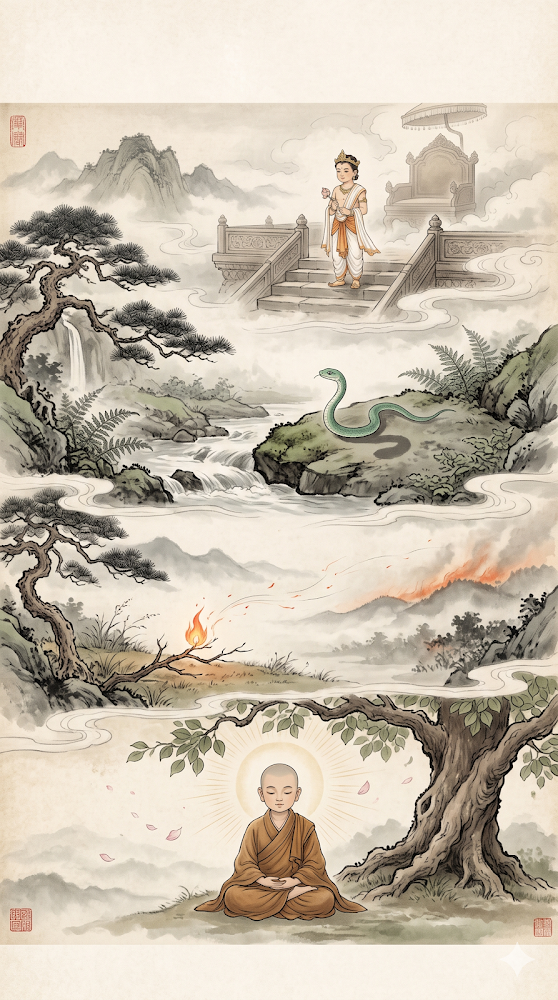

<!doctype html>
<html lang="vi">
<head>
<meta charset="utf-8">
<meta name="viewport" content="width=device-width, initial-scale=1">
<title>四不可輕 - TỨ BẤT KHẢ KHINH · Giải Nghĩa Từ Vựng</title>
<link rel="canonical" href="https://giainghiatuvung.blogspot.com/2026/10/tu-bat-kha-khinh.html">
<link rel="stylesheet" href="../../assets/kieu.css">
<script src="../../assets/do-luong.js"></script>
</head>
<body class="trang-bai">
<header class="dau-trang">
  <a class="ten-site" href="../../index.html"><span lang="zh-Hant">冩漢字佛經</span> Chép Kinh Chữ Hán</a>
  <nav><a href="../../muc-luc.html">Mục lục</a><a href="../index.html">Từ vựng</a></nav>
</header>
<main class="bai">
  <p class="duong-dan"><a href="../index.html">Từ vựng</a> / <a href="../index.html#chu-T">T</a></p>
  <h1><span class="han" lang="zh-Hant">四不可輕</span> <span class="hv">TỨ BẤT KHẢ KHINH</span></h1>
  <p class="thong-tin">Đăng ngày 21/10/2026 · <a href="https://giainghiatuvung.blogspot.com/2026/10/tu-bat-kha-khinh.html" rel="noopener">Xem bài trên blog gốc</a></p>
  <article class="noi-dung tu-vung-bai">
<p><span>四種不可輕忽、輕視之力量。</span></p><p><span>Bốn loại sức mạnh không thể khinh suất, xem thường.</span></p><p><span>雜阿含經卷四十六載，佛陀曾對波斯匿王宣說四不可輕之理，即：</span></p><p><span>Kinh Tạp A Hàm quyển 46 chép, Đức Phật từng giảng cho vua Ba-tư-nặc đạo lý 04 điều không thể khinh suất, đó là:</span></p><p><span>(1) 太子年歲雖小，然有朝一日成為國王，權柄無限，故不可輕。</span></p><p><span>01 là, Thái tử tuy còn nhỏ tuổi, nhưng một mai lên ngôi vua thì quyền bính vô hạn, cho nên không thể khinh suất. </span></p><p><span>(2) 蛇子之軀體雖小，然所含毒性能殺人，故不可輕。</span></p><p><span>02 là, rắn con tuy thân hình nhỏ bé, nhưng chất độc trong mình có thể giết người, cho nên không thể khinh suất. </span></p><p><span>(3) 小火雖微，然蔓延擴展，能燒山野，故不可輕。</span></p><p><span>03 là, đốm lửa tuy nhỏ, nhưng lan tràn rộng ra, có thể thiêu rụi cả núi đồi đồng nội, cho nên không thể khinh suất. </span></p><p><span>(4) 沙彌雖小，然隨年事之增長而修持，終能得聖道而有神通，為世間最不可輕之力量。</span></p><p><span>04 là, một vị Sa-di còn nhỏ, nhưng theo năm tháng lớn dần mà tu trì, rốt cuộc có thể đắc Thánh đạo và có thần thông, là sức mạnh không thể khinh suất nhất trong thế gian. </span></p><p><span>〔大智度論卷二十二〕</span></p><p><span>[X. Đại Trí Độ Luận quyển 22]</span></p><p><span>p2161</span></p><p><span>Trang 2161</span></p><p><span>***佛光大辭典 </span></p><p><span>Phật Quang Đại Từ Điển</span></p><p><span><a href="https://etext.fgs.org.tw/sutra_02.aspx" rel="noopener"><u><span>https://etext.fgs.org.tw/sutra_02.aspx</span></u></a></span></p><div><a href="../../anh/4ed9b5c658b199e5.png" rel="noopener"></a></div><br><p><br></p><p></p>
  </article>
  <nav class="dieu-huong" aria-label="Mục trước và mục sau"><a class="truoc" href="2026-05-lai-da-thuc-tap-nhiem-tuong.html"><span class="nhan">Mục trước</span><span class="han" lang="zh-Hant">阿賴耶識雜染相</span> <span class="hv">A LẠI DA THỨC TẠP NHIỄM TƯỚNG</span></a><a class="sau" href="2026-10-tu-chung-phap-ly-bo-tat-hanh.html"><span class="nhan">Mục sau</span><span class="han" lang="zh-Hant">四種法離菩薩行</span> <span class="hv">TỨ CHỦNG PHÁP LY BỒ TÁT HẠNH</span></a></nav>
</main>
<footer class="chan-trang">
  <p>Bản lưu dự phòng của blog <span lang="zh-Hant">詞彙釋義</span> Giải Nghĩa Từ Vựng, cập nhật 28/10/2026.</p>
</footer>
</body>
</html>
